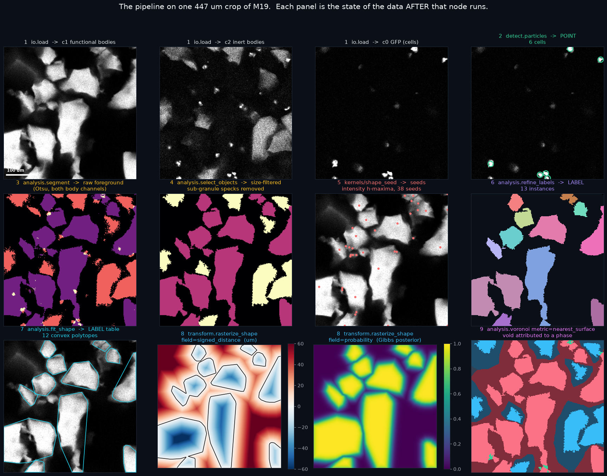
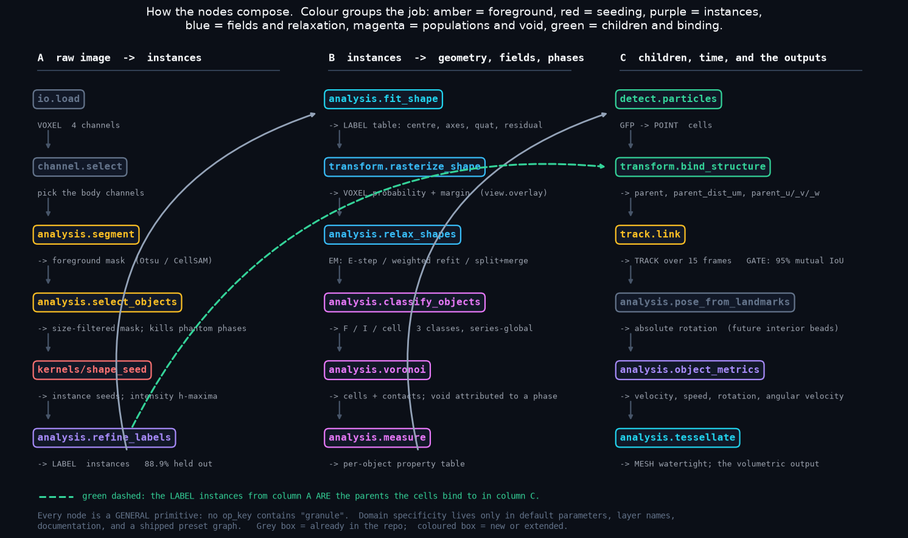
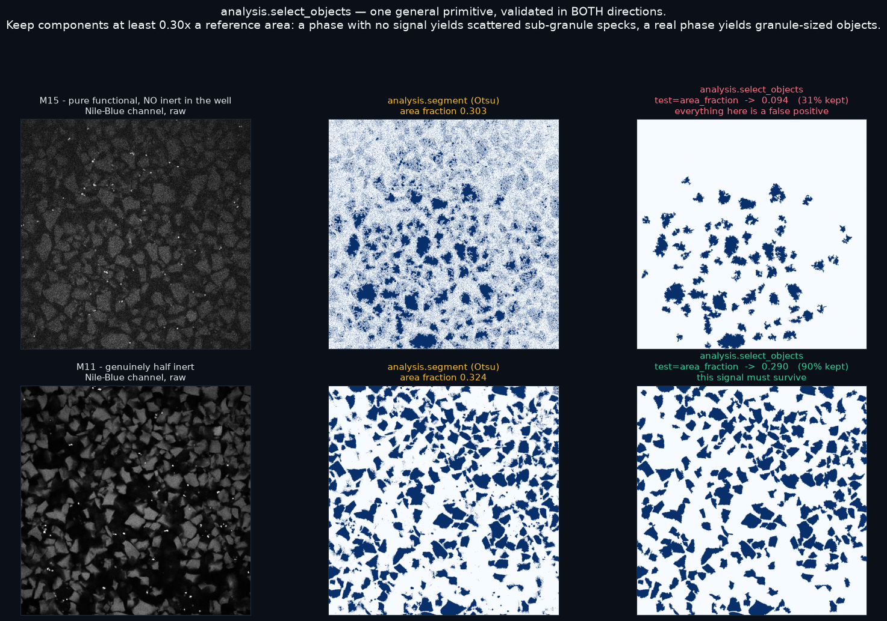
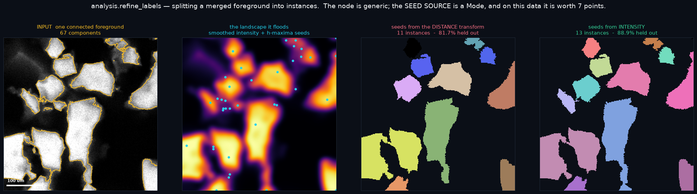
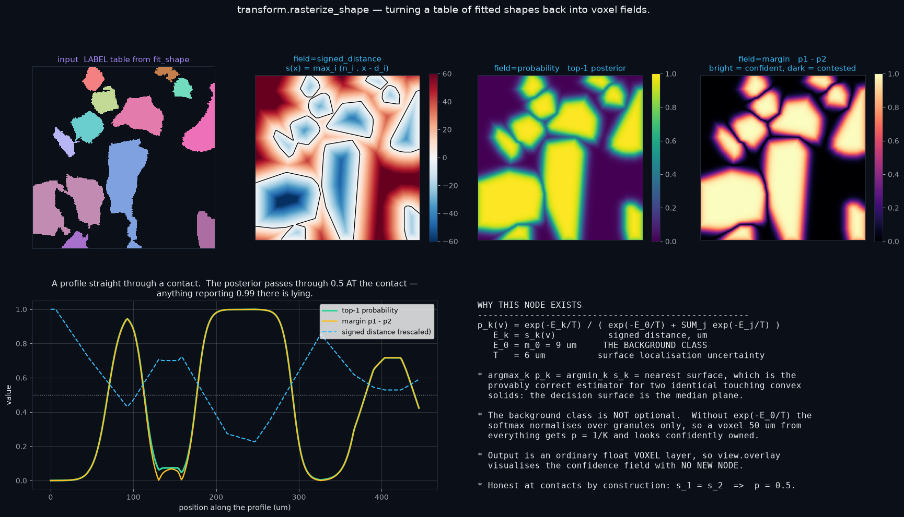
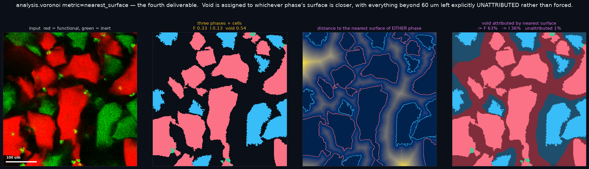
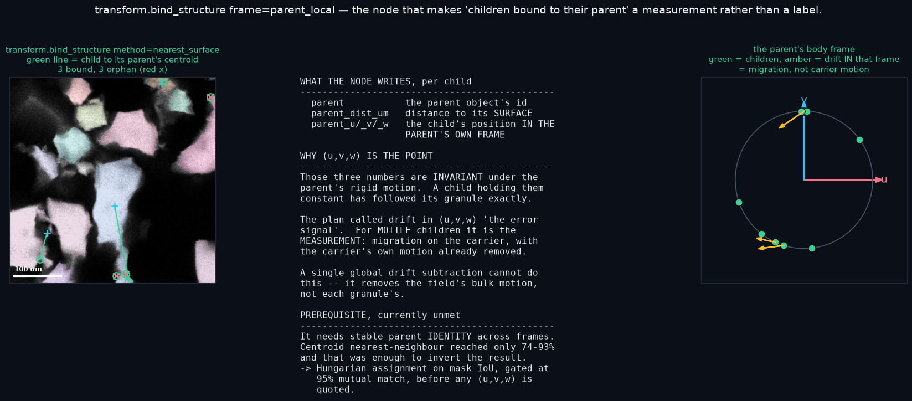

What this document is for. A workflow was designed to turn an .nd2
series of a packed granule bed into per-object geometry, tracked motion, phase-resolved void
statistics, and cells bound to the granules they crawl on. It needs eight new nodes plus
extensions to five existing ones. This review explains each node: what it consumes, what it
produces, what it does to the image, and why it cannot be an existing node.
Every figure below is a real transformation on real data — a 447 µm
crop of condition M19, processed by the code in scripts/_bed_analyze.py. Where a
node is not yet built, its operation is nonetheless implemented and run, including the
convex-polytope signed distance and the Gibbs posterior. Nothing here is a schematic.
The bed is jammed: granules touch. Two touching solids of the same colour have no intensity boundary between them, so no threshold can separate them — the split has to come from geometry. That single fact generates most of the node list.
| Requirement | Why existing nodes cannot do it |
|---|---|
| Split touching same-colour solids | Connected components never split. Measured: Otsu components are capped at 73.4% exact object count, because that is the true single-object fraction in this data. |
| Per-object shape and orientation | Nothing in the repository does parametric shape fitting or reports object orientation. |
| A per-voxel confidence of membership | No node produces soft assignment. Hard labels cannot express "this voxel is equally likely to belong to either of two touching objects", which at a contact is the truth. |
| Objects bound to a parent object | No parent/child relation exists between two structure layers. |
| Assign the empty space between objects to a phase | No node partitions background by proximity to labelled phases. |
| Absolute orientation over time | Body shape alone leaves a symmetry ambiguity; resolving it needs rigid landmarks. |


analysis.select_objects
NEWvalidated both directionskeep columndomain, test(gt/ge/lt/le/eq/ne/between/top_n/finite/area_fraction), action(drop/mark)WHOLE_SERIES for population testsWhat it does to the image. Drops objects failing a predicate. The predicate that matters here is size relative to a reference, and it solves a problem that two other approaches could not.

Plain Otsu produced the 30% phantom phase above, and a downstream void attribution built on it assigned 89% of a pure well's void to a phase that does not exist in that well.
A threshold floor at background + 10σ failed worse. On a channel with a large broad foreground the sub-threshold population is wide, so the floor computed 4791 DN — above the sensor's 4095 ceiling, and the foreground became mathematically empty. It also destroyed real signal in a mixed well.
The discriminator is size, not level. A phase with no signal yields scattered sub-object specks; a real phase yields object-sized components. This cannot exceed the sensor ceiling, introduces no tuned constant (the reference area comes from measured data), and clears debris from every channel as a side effect. e047
kernels/shape_seed → analysis.refine_labels
NEW88.9% held outmethod(competitive_growth/mrf_icm), seeds(intensity_hmax/edt_hmax/external), neighborhood(face/edge/vertex)WHOLE_VOLUME — an iterative solver is never tileableWhat it does to the image. This is the node that breaks the jam. It takes one connected foreground region and divides it into individual objects by flooding a landscape from seeds, so the divide lands where the objects actually meet.

These objects are convex polygons with bright interiors separated by dimmer seams. The distance transform is blind to the seam and sees only shape, so it over-splits on boundary lobing (7.6% of true singles) while missing broad flat contacts entirely. Intensity sees the seam directly.
That is a property of this sample, not a general truth — for membrane-bounded cells or smooth beads the distance transform is the better landscape. Hence a Mode. All parameters were fitted on two experimental conditions and scored on a third, three ways round; all three splits independently selected the same values, and the held-out score equals the in-sample score. e043
analysis.fit_shape NEWDomain.LABEL table: id, m,t,c, z,y,x, r0..r2, qw..qz, e1,e2, shape_model, n_support, rms_residual_um, volume_um3, surface_area_um2source, model(sphere/ellipsoid/convex_hull/obb), group_by(mtc/mt)What it does to the image. Replaces a blob of voxels with a small set of numbers: a centre, a set of bounding facets, an orientation, and a residual. Panel 9 of the pipeline figure shows the fitted polytopes as cyan outlines over the raw image.
The brief specified superellipsoids with surface roughness. At full resolution the
objects are unmistakably convex polygons with five to seven straight sides and sharp
corners. For a convex polytope P = {x : nᵢ·x ≤ dᵢ}:
s(x) = maxᵢ (nᵢ · x − dᵢ)
… is negative inside, zero on the boundary, positive outside, convex, and exact on the faces. So it is the signed distance the probability field needs, with no optimiser. That deletes the entire superellipsoid apparatus — the grid-then-refine search over exponents, the radial residual, the analytic Jacobian, and the exponent/roughness confounding. Roughness becomes the residual to the fitted hull rather than a second model. Orientation still comes from the inertia tensor, so the rotation kernel is unaffected.
z,y,x
are voxel coordinates and the Viewer depends on it — but r0..r2 are lengths
along rotated body axes that do not align with an anisotropic grid, so µm is the
only coherent choice.voxel_size_um and dims as provenance keyed by layer
name, following the existing mesh-provenance pattern, so consumers inherit the voxel size the
fit used instead of re-reading calibration and silently disagreeing after a recalibration.transform.rasterize_shape NEWfield(occupancy/signed_distance/probability/margin), overlap(argmax/nearest_surface/max/sum), channels(all/own)view.overlay visualises it with no new nodeWhat it does to the image. Turns the table of fitted shapes back into voxel fields
— the inverse of fit_shape. This is where "visualise the probability space
per voxel" is satisfied.

p₁−p₂
makes the contested set explicit — the dark ridges are exactly where two objects compete,
and they are only 3–7% of voxels, which is what makes the downstream refinement cheap.
Bottom left: a profile straight through a contact. The posterior passes through
0.5 at the contact. That is not a limitation — anything reporting 0.99 on a
contact plane is lying. Bottom right: the maths, including the term most easily
omitted.p_k(v) = exp(−E_k/T) / ( exp(−E₀/T) + Σ_j exp(−E_j/T) ) E_k = s_k(v) signed distance to surface k, in µm E₀ = m₀ the BACKGROUND class T surface localisation uncertainty (σ_PSF + σ_rough), in µm
Without the exp(−E₀/T) term the softmax normalises over objects
only, so a voxel 50 µm from everything gets p = 1/K and looks
confidently owned. At the measured solid fraction, roughly 60% of the field is empty
— so this term governs the majority of voxels, not an edge case.
Two further properties worth checking in review:
argmax_k p_k = argmin_k s_k is nearest-surface assignment, which is the
provably correct estimator for two identical touching convex solids (the decision
surface is the median plane). And because |∇s| = 1 for a true signed
distance, an energy imbalance of ΔE µm displaces the boundary by exactly
ΔE µm — which is the calibration for any intensity or prior term added to
the energy. Anything exceeding one voxel (1.72 µm) moves the boundary more than a
voxel.
| Representation | Per unit | Verdict |
|---|---|---|
dense K × Z·Y·X float32 | 11.7 GB | impossible |
| top-M sparse, M = 3 | 66 MB | the design |
| top-1 + margin | 22 MB | default export |
Store ids (Z,Y,X,M) uint16 + p (Z,Y,X,M) uint8 with M = 3: a
triple point is real, a four-way point is measure-zero and folds into
p_other = 1 − Σp. Compute per z-plane over a bounded candidate set
from a kD-tree at a physical radius, and log candidate-set overflow rather than silently
truncating.
analysis.relax_shapes NEWschedule(fixed/anneal), moves(none/split_merge)What it does. No single figure captures this node, because it is a loop: it alternates soft assignment against probability-weighted shape refitting until both stop moving. It is the node that makes the original method well posed.
The brief asked to "assign centroids from the probability" and to compute the "probability from the centroids". That is a fixed point with no initialiser and no proof that a solution exists. Written as expectation-maximisation on one explicit scalar energy it becomes well posed:
initialise closed-form moment fit of the seed voxels (needs no probability) repeat E-step probability field at temperature T M-step 1 refit each shape, weighted by p_k(v) <- "centroid from the probability" M-step 2 project centroids under a spacing prior <- "weights from known geometry" labels competitive growth, then energy polish moves propose a split or a merge; ACCEPT ONLY IF TOTAL ENERGY DECREASES until centroid movement < 0.25 voxel and label churn < 0.1%
Each step provably reduces the same scalar, and there is a termination test. The split and merge proposals are the "clustering algorithm that relaxes into the most probable configuration" from the brief, made concrete.
With the energy written under a single 1/T, argmin_k E_k is
independent of T — so annealing T leaves the hard labelling exactly
unchanged. It only softens the reported probability. "Relaxing the strictness" therefore
needs two schedules: T for the visualised field and the soft weights, and a separate
pair for the hard assignment. Without this you build something that appears to relax and never
moves its answer.
Relatedly, the surface-energy penalty should be derived, not tuned. A protrusion of
radius w and length ℓ gains volume πw²ℓ and costs
area 2πwℓ, so the cost per unit volume gained is 2γ/w,
which diverges as w→0. Any protrusion thinner than
w_min = 2γ/|s| is strictly rejected — so state the physical claim
("objects do not have high-aspect-ratio spikes"), solve for γ, and log the implied
w_min so the user sees what is being forbidden. Floor γ during annealing so no
schedule stage can ever admit a thinner spike.
analysis.classify_objects NEWdomain, feature(column/ratio/channel_contrast/columns), rule(threshold/otsu/quantile/kmeans/gmm), scope, n_classesWHOLE_SERIES — a population cut is a series-global statisticWhat it does to the image. Assigns each object to a population. In the pipeline figure this is what separates functional from inert bodies before the void is attributed.
| Design point | Reason |
|---|---|
Feature is log((median_A + δ)/(median_B + δ)) |
Per-object intensity = brightness × depth attenuation × bleaching × illumination nonuniformity. The middle factors are channel-common multiplicative nuisances that a ratio cancels; the log makes what remains two shifted Gaussians of comparable variance. |
| Erode before measuring | The single highest-value line in the node. PSF bleed across a contact plane is the dominant error in per-object intensity: two touching objects of different colours each acquire the other's signal and a naive mean pulls both toward the middle. This is the difference between ~99.5% and ~90% accuracy. |
| BIC guard over 1, 2, 3 components | If BIC selects one component the channels are not separating the populations, and the node must raise rather than bisect noise into two "populations". |
| Three classes, not two | Forced by the data: the third population is cells, defined by a different feature (GFP-positivity) than the body ratio. Their voxels must be masked out of the body measurement, because a cell on a functional object contributes inert-channel signal belonging to neither body population. |
| Circularity guard | Classify on intensity first, bind children second, then at most one optional consistency pass. The primary decision must not depend on children, since child binding needs the class. |
Phase accounting excludes cell voxels so the phases partition the field. Parent lookup must not exclude them: a cell crawling on an object is still on it, and punching its pixels out of the instance label makes the cell's own centroid land in a hole. When this was got wrong, every cell in the dataset read "in void" at all six conditions — it produces plausible zeros rather than an error. It then recurred for the second phase's mask. e048
analysis.voronoi — new metric
EXTENDEDmetric(euclidean/power/nearest_surface) — the existing default is preserved exactlyradius_col — a column, not a scalar; a scalar collapses power back to Euclidean{name}_contacts pair table, and cell_area / free_area / local_packing_fraction / cell_residual columnsWhat it does to the image. Divides the empty space between objects and attributes it. This is the fourth deliverable — phase-resolved void.

Against synthetic ground truth where pixel ownership is exactly known, contested-pixel accuracy was: watershed 99.99%, nearest-surface 99.96%, power 99.94%, ordinary Voronoi 95.39% — the sole loser, by 4.6 points. Its error is systematic against large objects: the larger object penetrates its own bisector, and the largest 20% lose 10% of their area on average. The direction held in 11 of 11 field/threshold configurations.
Nearest-surface assignment is a tessellation — the Set-Voronoi
diagram in its exact, sampling-free form. For bodies with disjoint interiors,
argmin_k s_k(x) = i for any x inside body i, so each body lies
entirely within its own cell and the local packing fraction is ≤ 1 by
construction. The argument uses no sphericity, so it survives non-spherical and even concave
shapes.
H = max_i R_i, lift sites to (c_i, √(H²−R_i²))
and queries to (x, 0); the squared Euclidean distance then equals the power
distance plus a site-independent constant, so the argmin is identical. Verified at 0
mismatches in 1,048,576 pixels and 169× faster than brute force. The trick is
dimension-generic.distance_upper_bound prune. It is the only
Euclidean-derived optimisation that is invalid, because power distance is not a distance and is
negative inside a sphere. Compute the argmin unpruned, then gate on the true distance to the
winner — which preserves the socket's documented meaning exactly.η_i = fraction of cell i that is foreground (cell fill) φ_i = |body_i| / |cell_i| (own occupancy) r_i = η_i − φ_i
r_i = 0 for a correct segmentation. A missing object raises
r_i by exactly the missing object's area over the cell area — and
crucially localises the error to one cell. Given that seeding, not partitioning, is the
measured bottleneck, this is the single most useful diagnostic in the design. Note that
φ_i alone is merge-invariant and therefore useless for this: merging
two radius-R objects into one radius-√2 R fit leaves it unchanged.
transform.bind_structure NEWparent, parent_dist_um, parent_u/_v/_w on the child layer; n_children on the parent layerchild_domain, parent_domain, method(containment/nearest_centroid/nearest_surface/overlap), frame(global/parent_local)What it does to the image. Establishes which parent each child belongs to, and re-expresses the child's position in that parent's own coordinate frame.

(u,v,w) is the point. Right: the parent's body frame — children sit
at fixed (u,v) if they only follow the parent, and the amber arrows are drift
in that frame, which is motion of the child relative to its carrier.parent_local is the whole reason this node exists(u,v,w) is the child's centre in the parent's fitted principal frame, divided
by the parent's own axis lengths. Those three numbers are invariant under the parent's rigid
motion. So a child holding them constant has followed its parent exactly, and drift in them
is motion relative to the parent.
The original plan called that drift "the error signal". For motile children it is the measurement — migration on a moving carrier, with the carrier's motion already removed. A single global drift subtraction cannot achieve this: it removes the field's bulk motion, not each parent's own.
parent_local requires stable parent identity across frames. Centroid
nearest-neighbour matching reached only 74–93%, and that was enough to
invert the result: measured child steps in the parent frame came out
1.5–1.76× larger than in the image frame at three conditions. A ratio above
one means the parent's position is jittering more than the child moves, so subtracting it
adds noise. Apparent parent-transfer rates of 20–45% over the series are the
same symptom.
The fix is a better linker, not a better binder. Objects move 8–19 µm
per frame while being 50–70 µm across, so consecutive instance masks overlap
heavily — Hungarian assignment on mask IoU uses shape and extent rather than a
single point, and degrades gracefully when an object is split differently between frames. It is
implemented in scripts/_bed_analyze.py behind an explicit gate: ≥ 95%
mutual match, parent-frame/image-frame ratio < 1.0, apparent transfer ≤ 10%. No
(u,v,w) number should be quoted until it passes. e049
analysis.pose_from_landmarks NEW
for a future acquisitionmethod(kabsch/kabsch_ransac), template(fixed/adaptive), correspondence(nearest/hungarian/relaxation)What it does. Recovers absolute rotation from a constellation of rigid landmarks on or in an object. Body shape alone leaves a symmetry ambiguity; landmarks remove it.
A future acquisition will place beads inside the objects. Interior landmarks are
strictly better than surface ones for this: body coordinates are fixed by construction, there
is no occlusion inside a contact facet (and contacts are where this data is hardest), and
binding reduces to method=containment — which retires the surface-offset
nuisance parameter and the orphan/crosstalk branches from the critical path. They remain
available as general options.
Particle-tracking velocimetry composes rather than competes. Kabsch consumes
correspondences; PTV produces them. The padded Hungarian assignment already specified
is a global-nearest-neighbour PTV matcher; what classical PTV adds is
neighbour-consistency relaxation, which is exactly right here because beads inside one
object move rigidly together, so the neighbourhood is the object. Hence a
correspondence Mode, still a general point-set primitive.
D = diag(1,1,sign(det(VUᵀ))), a noisy near-planar constellation returns a
reflection with determinant −1 — which is not a rotation, and it corrupts the track
silently.(m,t,c,z)Why it is a node and not a footnote. Roughly one field in three is unusable,
and this is distinct from object rejection — select_objects drops bad
objects; nothing currently drops a bad field. Two distinguishable failure modes
were observed:
The first version of the segmentation gate failed the level-failure field as "real signal destroyed by the filter" — but the raw channel had no signal to begin with, so the filter was not on trial. A gate that fails on bad data teaches nothing about the method. The gate now judges the method only on fields that carry signal, and flags the rest separately.
Before proposing anything, every one of the 72 shipped ops was checked against every capability the workflow needs. The audit removed three of the eight proposed nodes. That result is presented first because it is the strongest thing that can be said about the remainder: the proposal has been pruned rather than padded.
| Capability needed | Closest existing op | What it already does | Gap | Verdict |
|---|---|---|---|---|
| Remove a phantom phase from a channel with no signal | analysis.segment |
Already ships min_area / max_area / min_volume /
max_volume — a calibration-aware µm²/µm³ size
filter, plus fill_holes |
None for the mask case. The reference area is absolute rather than relative to a measured single-object area | ALREADY EXISTS — this is a parameter change, not a node |
| Split touching objects | analysis.segment method=watershed |
Distance-transform watershed with min_distance (documented as "THE
over/under-splitting knob"), an optional external mask input,
connectivity, plus StarDist and CellSAM as alternative methods |
The landscape is the distance transform only. No intensity-seeded landscape, no external height field, no energy polish | MODE ON EXISTING — refine_labels
should be withdrawn as a separate node |
| Link objects frame to frame | track.link target=label |
Already links by maximum IoU overlap, whole-series, per (m,c) | Greedy per-object max-IoU rather than a one-to-one assignment, and no mutual-match gate | ALREADY EXISTS — the linking failure in §4 came from my script using centroid distance, not from a gap in the repo |
| Per-object shape descriptors | analysis.measure |
regionprops shape columns in µm: eccentricity, perimeter, solidity, plus
intensity stats, with an optional raw input so you can segment on enhanced and
measure on raw |
No fitted model: no bounding facets, no quaternion, no fit residual, no analytic volume | GENUINELY NEW — but note solidity, the single best merge discriminator measured, already exists as a column |
| Population assignment from a feature | analysis.cluster_points, analysis.histogram_threshold |
GMM / KMeans with a BIC model-order sweep, µm-scaled so anisotropy does not bias the fit | Point domain only; no cross-channel contrast feature; no eroded-core measurement | MOSTLY EXISTS — classify_objects is
largely cluster_points generalised to LABEL with one new feature |
| Tessellate space around objects | analysis.voronoi |
Nearest-seed in µm space, per-region arenas or a mask, territory raster + table with area and local density, and a 3-D surface MESH | Euclidean on centroids only; no per-seed radius; no residual column | EXTEND — a metric Mode plus three columns |
| Rasterise a field back to voxels | transform.rasterize_field |
Interpolates a POINT vector/scalar field to full-resolution voxel layers, inheriting 2-D/3-D from the field | Interpolates samples; cannot evaluate an analytic implicit surface, which is what a signed distance or a Gibbs posterior requires | GENUINELY NEW |
| Move an attribute between structure layers | transform.transfer_structure |
All 15 domain pairs across Voxel↔Label↔Point↔Track, with reducers | Moves an attribute across an existing relation. It cannot establish which parent a child belongs to, nor express a position in a parent's frame | GENUINELY NEW |
| Per-object motion over time | analysis.object_metrics |
Whole-series velocity, speed, KNN distances, divergence, curl, intensity fold change | No angular metrics | EXTEND — three columns behind a gate |
| Soft per-voxel membership | nothing | — | Everything | GENUINELY NEW |
| Energy-based relaxation with split/merge | nothing | — | Everything | GENUINELY NEW |
| Absolute orientation from landmarks | nothing | — | Everything | GENUINELY NEW — and not needed until the next acquisition |
analysis.refine_labels should be withdrawn as a node. Its function is
watershed-with-a-better-landscape, and analysis.segment already floods a masked
region with a seed-spacing control and four methods including two foundation models.
Adding a competing segmentation node would fragment the most important node in the catalog.
The 88.9% result is worth having — but it belongs as a seeds Mode on
segment, alongside a height input for an external landscape.min_area on
analysis.segment, a socket that already exists and is already calibration-aware.
What select_objects adds beyond that is filtering an arbitrary table and a
relative area test — useful, much narrower than originally claimed.track.link already
links labels by maximum IoU. The measured 74–93% match rate came from my batch script
using centroid nearest-neighbour. The genuine improvement available — one-to-one
assignment plus a mutual gate — is a change inside an existing node, and the gate matters
more than the algorithm.So the honest count is four genuinely new nodes (fit_shape,
rasterize_shape, relax_shapes, bind_structure), one
deferred to a future acquisition (pose_from_landmarks), and the rest
extensions to nodes that already exist.
Each of the four fills a gap where the catalog currently has nothing, and each one unlocks something the existing set cannot express at any parameter setting.
| Node | What becomes possible that is impossible today | Who benefits beyond this sample |
|---|---|---|
analysis.fit_shape |
An object gains an orientation and a model residual. Today an object has an area and an eccentricity; it has no facing, and no measure of how well it matches an expected shape. | Any anisotropic object whose direction matters — fibres, crystals, nuclei, cells with a long axis. The residual is a general outlier detector: "this object is not the shape the others are". |
transform.rasterize_shape |
A per-voxel confidence layer, and with it an honest answer at boundaries. Today every assignment is hard, so a voxel exactly between two objects is silently given to one. Because the output is an ordinary float layer, the existing viewer displays it with no new code. | Anyone who needs to know where a segmentation is unsure — for QC, for active learning, or to restrict expensive downstream work to the contested 3–7% of voxels. |
transform.bind_structure |
A parent/child relation between two structure layers, and coordinates in the
parent's own frame. Today transfer_structure can move a value along a relation
but nothing can create one. |
Any nested-object problem: puncta in nuclei, vesicles in cells, spots on beads, receptors on membranes. The parent-local frame generalises to any motion measured relative to a moving carrier. |
analysis.relax_shapes |
An iterative solver with an explicit objective, so segmentation stops being a one-shot decision. Split and merge proposals accepted only on energy improvement give a principled answer to "is this one object or two", which is currently a threshold. | The largest and riskiest of the four — see 5.4. Its value is the objective itself: a number that says which of two segmentations is better. |
analysis.voronoi's new metric defaults to euclidean, so the
baseline stays semantically identical and the catalog snapshot changes only by addition.segment's four methods are
validated on many. StarDist and CellSAM are trained on large annotated corpora and
generalise across microscopes. The intensity-h-maxima landscape was tuned on three conditions
of one dataset and beat the distance transform because these objects have bright interiors
and dim seams. On membrane-bounded cells it will very likely lose. It must ship as a Mode
with that caveat in its documentation, never as a new default.fit_shape's simple models duplicate measure.
sphere, ellipsoid and obb are recoverable from
regionprops inertia axes, which analysis.measure already exposes. Only
convex_hull is clearly additive. A reviewer could reasonably ask that the
redundant models be dropped.relax_shapes is the least de-risked thing in the proposal. It is an
iterative solver whose runtime, convergence and failure modes on unfamiliar data are unknown.
The energy decreases monotonically at fixed schedule parameters — that is assertable in a
test — but the objective itself changes between annealing stages, so across stages only
monitoring is possible. If it does not converge on a user's data there is no obvious fallback
except disabling it.refine_labels is withdrawn above. A catalog with two nodes that both split
touching objects is worse than one node with an extra Mode, regardless of which performs
better.| Cost | Size | Notes |
|---|---|---|
| Socket documentation | ~65 descriptions | The gate requires ≥120 characters for the flagship set, never echoing the label, and
memo-neutral. For scale, analysis.segment alone carries ~29 documented
sockets. This is real work and should be scheduled per increment, not deferred. |
| Mode option documentation | ~75 at ≥60 chars | The exemption set must stay empty. |
| Selftest floors to raise | 5 | Two len(shipped) ≥ 54, one audited ≥ 54, the
n_in/n_out socket floors, and the annotated-param floor. They will
not fail on addition, which is exactly why they must be raised deliberately — a
floor left at 54 while the catalog holds 76 has silently stopped guarding. |
| Per-node tests | ~8 new test groups | House style is structural-spec-first so a dependency-gated node still gets its full contract checked before any skip. Plus a cross-node dataflow group asserting raster/table id agreement, provenance survival, and memo isolation. |
| Granularity risk | 2 nodes | relax_shapes and any refinement are WHOLE_VOLUME; a population
classifier is WHOLE_SERIES. Misdeclaring these is the specific trap the
engine's checks exist to catch, and it degrades performance silently rather than
failing. |
| Memory | 11.7 GB if done naively | The one choice that is unrecoverable rather than merely slow. The top-3 sparse representation is 66 MB; a dense field is not an option at this scale. |
| Maintenance surface | +4 ops, +5 extended | 72 → 76 ops, about +6%. The four new ones introduce concepts the catalog does not currently contain — a fitted model, a soft field, a parent relation, an energy — so they carry conceptual as well as code weight. |
The tiers are ordered by value per unit of new surface. Each one is independently useful and each ends with the four gates green.
| Tier | New ops | Change | What it buys |
|---|---|---|---|
| 0 done | 0 | Increment 0 defect clearing, already complete and catalog-identical | Unblocks 3-D per-object motion, which was unavailable; kills a silent wrong-method-dispatch bug |
| 1 | 0 | Parameters and Modes only. min_area on segment for the
phantom fix; a seeds Mode and a height input on
segment; one-to-one assignment plus a mutual-match gate in
track.link; angular columns on object_metrics |
Most of the measured benefit for zero new nodes. Object count from 73.4% to 88.9%, phantom phases eliminated, linking gated so a bad series is reported rather than silently used |
| 2 | +2 | analysis.fit_shape and transform.rasterize_shape |
Orientation, fit residual as an outlier detector, and a per-voxel confidence layer that the existing viewer already knows how to display |
| 3 | +1 | transform.bind_structure |
Parent/child relations and parent-local coordinates — the nested-object capability, useful well beyond this sample. Depends on Tier 1's linking gate |
| 4 | +1 | analysis.relax_shapes, plus the voronoi metric and residual
columns |
An explicit objective over segmentations, and phase-resolved void. The riskiest tier; take it last and only if Tiers 2–3 prove out |
| 5 | +1 | analysis.pose_from_landmarks |
Defer until the acquisition with interior beads exists. Building it now means maintaining an unexercised node |
It adds no new ops, changes no defaults, touches no core files, and captures the two largest measured improvements: the object-count jump from the ceiling of connected components, and a linking gate that turns a silent failure into a reported one. Everything above it is optional and independently justifiable.
| Node | Change | Why |
|---|---|---|
analysis.cluster_points |
New modes space, group_by(mtc/mt/all),
k_from, assign(hard/soft), covariance,
noise; method gains dbscan / hdbscan / agglomerative |
group_by=mt is the load-bearing one: it makes the two populations one
competing population. The current per-(m,t,c) loop clusters them
separately so they never contend, which is wrong for a contacting bed. |
analysis.tessellate |
Fifth boundary choice parametric; kernel_axes
becomes a Mapping with footprint_mode="boundary" |
Emits an analytic watertight surface from a shape table. The static axes declaration
over-claims, because parametric reads no image at all. |
detect.particles |
Optional source VOXEL layer socket |
Lets seeds be maxima of the probability or margin field, following the existing external-mask precedent. Closes a requirement with no new node. |
analysis.object_metrics |
Angular metrics: rot_angle_deg, omega_deg_s,
axis_drift_deg, behind a gate that refuses with "run fit_shape first" when
the table carries no orientation |
Completes the motion half of the deliverable. Unblocked by the Increment 0 changes below. |
analysis.segment |
Optional external height layer for watershed |
So the probability field can be flooded directly rather than re-derived. |
CONTACT domain for the adjacency relation. It would need a
bridge entry, and that is fatal by construction: every existing bridge keys on a single
id, so CONTACT → LABEL is ambiguous (does object a take row
(a,b), or (b,a), summed, maxed?). The reduction must be
chosen, which makes it a node parameter, not a bridge. A pair table on
Domain.LABEL is already a legal, tested shape — the track-membership table
ships with no id or coordinate columns today.One increment is complete. It is catalog-identical by design — it clears
defects that would silently corrupt later work without adding a node. Verified:
CATALOG IDENTICAL — 72 ops, same order, same declarations.
| File | Δ | Change and why |
|---|---|---|
kernels/granule_cluster.py | +176/−26 | Explicit dispatch with raise ValueError; surfaced the estimator's soft
responsibilities, covariances and axis lengths. The dispatch previously ran GMM for any
unrecognised method string — with more methods planned that becomes a correctness
bug no test catches. The covariance eigenstructure was computed and thrown away; note the
semi-axis needs a √5 factor for a uniform solid, and omitting it makes
axes 2.24× too small. |
catalog/_shared/objects.py | +38/−11 | Velocity returns (vz, vy, vx); the volumetric refusal becomes a parameter.
This was a blocker. The module hard-refused every subpixel table and had no
vz at all, so there was no per-object motion column in 3-D — the
"position over time" half of the deliverable was unavailable. |
catalog/analysis/object_metrics.py | +52/−8 | Per-metric refusal instead of blanket; vz only for volumetric tables;
calibration read only when needed (memo-fence discipline). Only two metrics are genuinely
planar; refusing everything else was over-broad. |
catalog/analysis/object_field.py | +4/−2 | Unpacks and discards the axial component, with a comment, so the discard is not read as an oversight later. |
catalog/analysis/tessellate.py | +9 | Skips the reserved negative label. The kernel already drops it, so this is a guard, not a live fix — stated as such, so the node does not silently depend on kernel behaviour. |
kernels/mesh_raster.py | +11/−4 | Adds parametric explicitly to the concave/watertight branch. It previously
fell through to a correct-by-accident default. |
selftest.py | +39 | Parity test re-pointed to the new contract, asserting both what now works and what still correctly refuses. |
scripts/catalog_baseline.json | +8/−8 | Re-blessed for the documentation changes, in the same change as the code, so neither is independently unverifiable. |
| Path | Contents |
|---|---|
scripts/_bed_analyze.py | The analysis as a cluster-runnable CLI:
convert (ND2 → chunked zarr) / analyze (one JSON per plane,
array-parallel, resumable) / link (gated) / reduce. Every
calibrated constant carries the evidence-log id that established it. Verified to reproduce
the recorded numbers exactly. |
.claude/skills/evidence-log/ | The collaborative review loop as a reusable skill: an append-only log with a reply box, two posterity exports, and a blind stratified labelling sheet. That sheet produced 585 hand labels which became the acceptance gate for the seeding node, moved a threshold from 0.93 to 0.798, and retracted one headline claim. |
CodeLog/ClaudesPlan/V2.22*.md, V2.23*.md |
The design specification and the remaining-work plan. Restores a per-work-package doc habit that several prior packages dropped — its absence is why this project had to reconstruct its own state from git commit bodies. |
CodeLog/live/, CodeLog/img/ |
The evidence record and the figures in this document. |
| Limit | Measured | Design consequence |
|---|---|---|
| One body channel is saturated | p99.9 pinned at the 12-bit ceiling; 0.2–9.1% of the field clipped in every frame | Geometry usable, intensity not. This kills the intensity term in the relaxation
energy for that channel, so λ_I must be per-channel and default
to zero where saturation exceeds a threshold, rather than silently trusting clipped
values. |
| Spatial undersampling | Nyquist wants 0.34–0.44 µm; actual 1.72 µm | 3.9–5.1× undersampled, so sub-voxel boundary claims are meaningless. The limit is sampling, not diffraction. |
| Axial sampling | 40 µm step vs 50–70 µm objects; usable range z = 0–3 of 7 | Consecutive-plane overlap is enough to link an object and bound its extent, not to constrain tilt. Hence dimension-generic nodes operating in 2-D per plane, with volumes from a slab sum. |
| Shape | convex polygons, 5–7 straight sides | Replaced the superellipsoid model, deleting the entire optimiser. |
| Cross-channel coupling | 16–19 DN at three zero-controls vs 346–947 DN at five mixed wells | Chemical, not optical, and confined to the cells. So no pixel-wise unmixing anywhere — it becomes a three-class object model instead. |
A blanket correction where the effect is conditional, three times: a global
cross-channel coefficient for an effect confined to one object class; a threshold floor applied
to a channel that never needed one, which pushed the cut past the sensor ceiling; and cell
pixels subtracted from a mask used for parent lookup, which made every child read "in
void" — twice, once per phase. Plus a parameter sweep whose optimum sat on its own
boundary, twice, and a gate that failed on bad data and so reported a method failure.
All are now rules with provenance in the skill, and the gates in
_bed_analyze.py exist to catch them.
Phase 0 cluster-runnable CLI + zarr convert ← nothing runs without this [DONE]
|
+-- Phase 1 overlap linking (Hungarian on IoU) ← BLOCKS all dynamics
| |
| +-- per-object velocity, parent-frame migration (requote)
|
+-- Phase 2a finder validity at z = 0-3 ← independent of Phase 1
| |
| +-- Phase 2b z-linking -> volumes ← needs 2a AND the Phase 1 linker
|
+-- Phase 3 full 1260-plane sweep ← needs 0; better with 1 and 2
|
+-- Phase 4 design regressions + clustering
|
+-- Phase 5 build the nodes, with every default now measured
A 1260-plane sweep with linking at 74–93% produces 1260 planes of unusable dynamics at
identical per-plane cost. The compute is not the constraint — 1260 planes is about
two core-hours — the I/O is, which is why convert to chunked zarr comes
first: random-access reads out of the source file do not parallelise because the reader holds
file state.
OPS LOST or REGISTRATION ORDER changed during a pure addition means a
node was clobbered, most likely by a test fixture registering a real op key.CodeLog/live/ belongs in git. ~14 MB of figures plus
the 585 labels. For: it is the provenance for every calibrated constant in the batch script,
and the labels are irreplaceable. Against: size. Middle option: commit the log, the markdown
export and the labels while ignoring the figure directory.